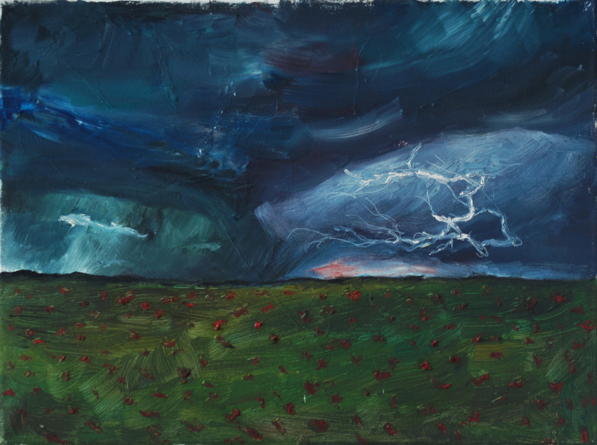
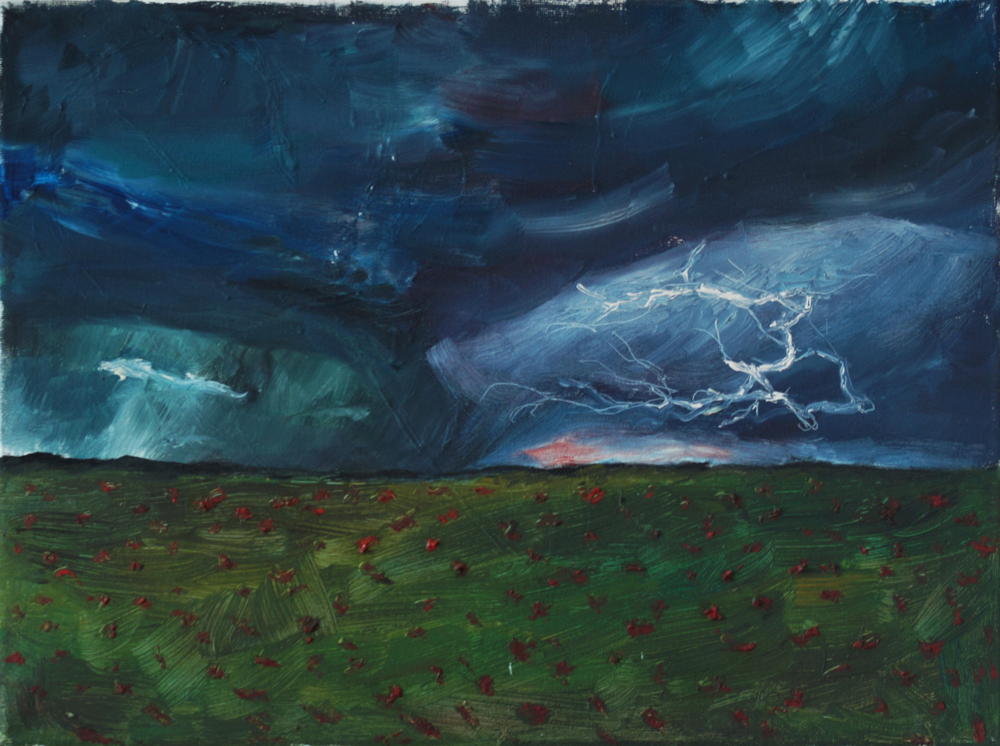

Ненастье
 

 03.08.16 Холст на подрамнике 30х40, масло
Мне всегда нравилась гроза. Сгущающиеся темные тучи, освещаемые вспышками
03.08.16 Холст на подрамнике 30х40, масло
Мне всегда нравилась гроза. Сгущающиеся темные тучи, освещаемые вспышками
молний, глухие раскаты грома, запах дождя. Мне бы хотелось хоть раз оказаться в
цветочном поле во время грозы.
Представляя все это, и то, как благоухание цветов смешивается с запахом дождя, я
словно действительно оказалась в том самом месте на момент написания картины.
Работа получилась эмоциональной и контрастной. Оттенки темных туч, мазками
перетекающие друг в друга. Яркая вспышка молнии. Трава, взъерошенная
порывами ветра.
Поначалу работать с маслом было сложно. Иногда получалось так, что не сумев
найти подходящую композицию для будущей картины, я заново грунтовала холст и
писала новую картину поверх. После этого на новой картине были видны
неровности, слои краски загрунтованной картины.